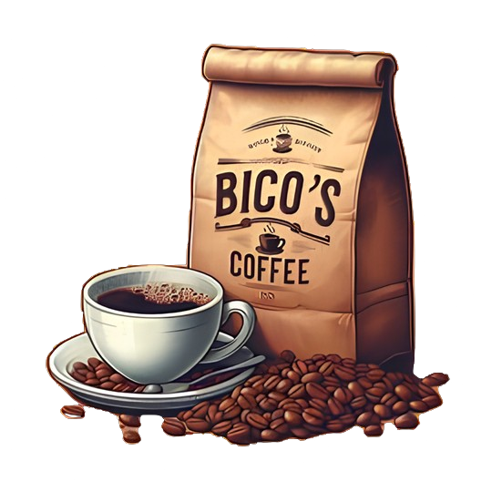

Café 1
Café Normal
- Descrição
-
- O café normal é uma bebida clássica e reconfortante, feita a partir de grãos de café torrados e moídos. É conhecido por seu sabor equilibrado e aroma agradável, sendo uma escolha popular para começar o dia ou para uma pausa durante a tarde.
Café 2
Café Expresso
- Descrição
-
- O café expresso é uma bebida intensa e concentrada, preparada forçando água quente através de grãos de café finamente moídos. É conhecido por seu sabor forte e encorpado, com uma camada de crema no topo. Ideal para quem aprecia um café robusto e energético.
Café 3
Café Expresso com Canela
- Descrição
-
- O café normal é uma bebida clássica e reconfortante, feita a partir de grãos de café torrados e moídos. É conhecido por seu sabor equilibrado e aroma agradável, sendo uma escolha popular para começar o dia ou para uma pausa durante a tarde.
Café 4
Café Latte
- Descrição
-
- O café normal é uma bebida clássica e reconfortante, feita a partir de grãos de café torrados e moídos. É conhecido por seu sabor equilibrado e aroma agradável, sendo uma escolha popular para começar o dia ou para uma pausa durante a tarde.